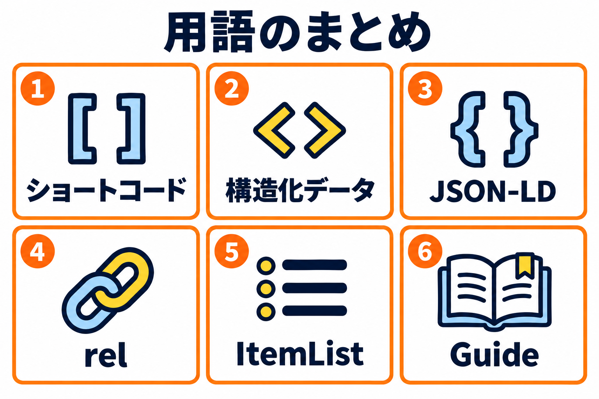

用語集
このマニュアルに出てくる用語をまとめています。

このマニュアルに出てくる用語を、まとめました。
用語の一覧
| 用語 | 意味 |
|---|---|
| author（おすすめしている人） | 構造化データに入れる、「誰がおすすめしているか」の情報です。ページの投稿者（人）か、サイト名（組織）を選べます。設定画面で決めます。 |
| Guide（ガイド） | 構造化データの形の 1 つです。「おすすめ○選」のように、ランキングそのものが記事の主題のときに使います。構造化データの「まとめの形」で選びます。 |
| ItemList（アイテムリスト） | 構造化データの形の 1 つで、「順位のついた一覧」を表します。このプラグインでは、ランキング全体を表します。 |
| JSON-LD | 構造化データを書くための形式の 1 つです。ページの中に、画面には見えない形で置かれます。 |
| ListItem（リストアイテム） | ItemList の中の、1 つ 1 つの順位を表す形です。 |
| nofollow | リンクの rel の 1 つです。リンク先を評価してほしくないときに付けます。 |
| noopener | リンクを新しいタブで開くときに付ける、安全のための印です。新しいタブから、元のページを操作できないようにします。このプラグインが自動で付けます。 |
| Product（商品） | 「おすすめする対象の種類」の選択肢の 1 つです。並べたものが商品のときに選びます。 |
| Recommendation（おすすめ） | 構造化データの形の 1 つで、「おすすめ」を表します。順位ごとに 1 つ出力されます。 |
| rel | リンクに付ける、「リンク先とどういう関係か」を表す印です。nofollow・sponsored・noopener などがあります。 |
| Search Console | Google が提供する、サイトの検索での状態を確かめる無料のツールです。 |
| Service（サービス） | 「おすすめする対象の種類」の選択肢の 1 つです。並べたものがサービスのときに選びます。 |
| sponsored | リンクの rel の 1 つです。広告やアフィリエイトのリンクに付けます。 |
| Thing（指定しない） | 「おすすめする対象の種類」の選択肢の 1 つです。種類を決めないときに選びます。迷ったときは、これを選びます。 |
| 管理用の名前 | ランキングを一覧などで見分けるための名前です。ランキングの編集画面の、いちばん上のタイトル欄に入力します。見出しが空欄のときは、見出しとして表示されます。 |
| 見出し | ランキングの上に表示される題名です。見出しの種類（h2・h3・h4・太字）を選べます。 |
| 構造化データ | ページの内容を、検索エンジンなどのプログラムが読み取りやすい形で書いたデータです。このプラグインは、ランキングの内容を JSON-LD の形で出力できます。 |
| 順位 | ランキングの 1 位、2 位…のことです。3 位から 10 位まで、つくれます。1 つの順位に、名称・簡単な説明・URL を入力します。 |
| ショートコード | 本文に書く、[ ]（角括弧）で囲んだ短い文字で、書いた位置に、ランキングなどを表示する仕組みです。このプラグインのショートコードは [kashiwazaki_seo_recommended_ranking] です。 |
| デザインの型 | ランキングの見た目の種類です。スタンダード・王冠・シンプル・比較表・上位3つを大きく、の 5 つがあります。 |
| 投稿タイプ | WordPress の「投稿」「固定ページ」などの、ページの種類です。サイトに独自の種類（カスタム投稿）があることもあります。 |
| 表示位置 | ページの中の、ランキングを表示する位置です。本文の上・本文の下・手動・表示しない、の 4 つがあります。ページの編集画面のボックスで選びます。 |
| プレビュー | 保存する前に、ランキングの見た目を確かめる機能です。ランキングの編集画面にあります。 |
| メインの色 | 順位の印の背景・ボタン・飾りの線に使う色です。設定画面で決めます。 |
| リッチリザルト | 検索結果に、星の評価や価格などの、通常より詳しい情報を添えた表示のことです。 |